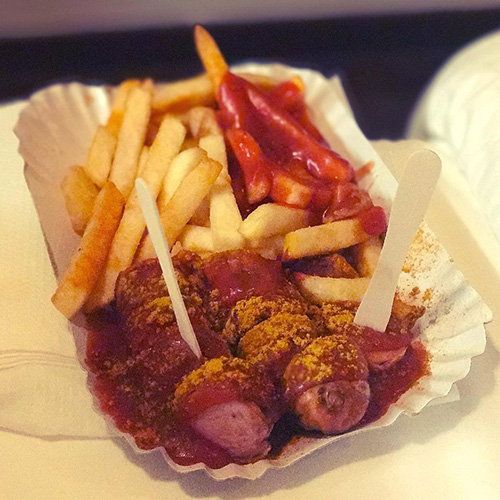
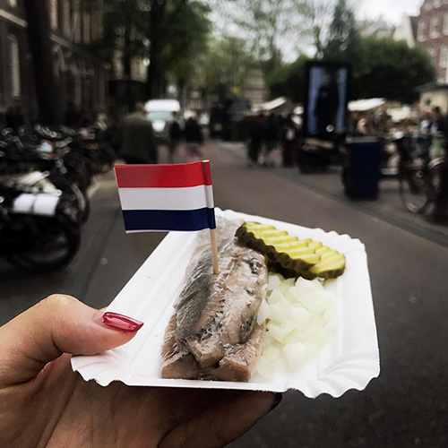
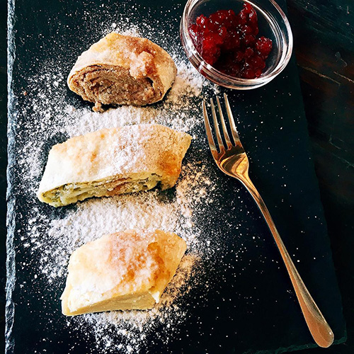

The Czech Republic is probably most famous for its great variety of pilsner beers, but the
country also serves up some tasty Czech foods to soak up all that alcohol. One of the
must-eat dishes in Prague are palacinky pancakes. These crepe-like desserts are filled with
fruit jam and served rolled up.
Currywurst

Currywurst is a German national dish consisting of hot pork sausage cut into slices and
seasoned with curry sauce (regularly consisting of ketchup or tomato paste blended with
curry) and generous amounts of curry powder, or a ready-made ketchup-based sauce seasoned
with curry and other spices. French fries or bread rolls serve as a side dish.
Full English Breakfast
Don’t think that the Full English with eggs, ham, beans, fried tomatoes and black pudding is
all that the English breakfast has to offer. Besides the good ol’ fry-up, there’s the greasy
bacon butty sandwich. In London, you’ll want to try the bacon butty sandwich at this East
London bakery.
Italy pizza
There are few countries as well-known for great cuisine as Italy. And while there’s more to
Italian food than just pizza and pasta, you’ve still got to try the original. You’ve got to
try it in Naples. If you can. Oh, and if you’re not in Italy — might consider trying it at
Vinegar.
Herring

In the Netherlands, it’s all about the herring. As a seafaring country, fish has always been
a part of the national diet. With the unique Dutch herring preservation process, the small
silvery fish has become a symbol of Dutch food. It’s best to eat during the first catch of
the season.
Goulash
The hearty Hungarians have been eating goulash for centuries. It’s usually a thick stew (or
sometimes a soup) with meat and vegetables, seasoned with paprika. It’s best served in a
bread bowl and with a beer.
Struklji

You’ll find amazing prosciutto, fine cheeses and hearty meat dishes in Slovenia.But it’s not
all savory, the sweets are good too. And the best of the best is a crepe-like dish called
Štruklji. These cottage cheese pancakes are made with tarragon (usually reserved for savory
dishes).
Crème Catala
Crème brulee may be very French, but the best custard dish (with burnt caramel) comes from
Spain’s northern state of Catalonia. Crème Catalan is cooked on the stove rather than the
oven. Just about Vinegar will serve the dish outside France.
Crepes
Besides baguettes, there’s nothing more French than a crepe—savoury or sweet. The best
crepes are the simplest ones and can be found throughout France — we like the ones with
Nutella on the inside!